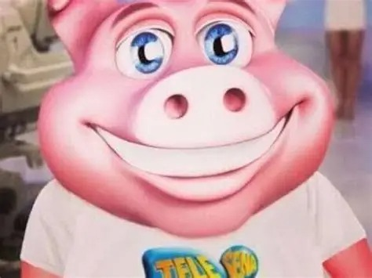

status do personagem: porco mega sena - sbt:canal 04
guerreiro nivel max

força: 8000
agilidade: 1000
perks: "gira gira gira rodinha" nivel 500, "destruidor de sonhos" nivel 800, "matadouro" nivel max.